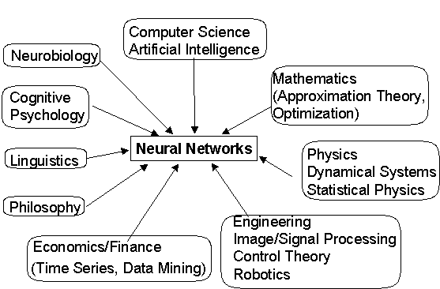

| Understanding perception, learning, and memory | |
| What kinds of problems can large interconnected systems of model neuron solve? What are limitations? What are the strengths? |
| Neurodynamics | |
| Mathematical principles for implementing neural networks | |
| Relation to statistical inference and regression | |
| Information-Theoretic approach |
| Practical efficient implementations of neural networks for control, forecasting, signal/image processing, and pattern recognition. |